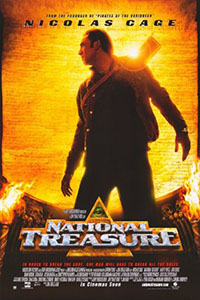
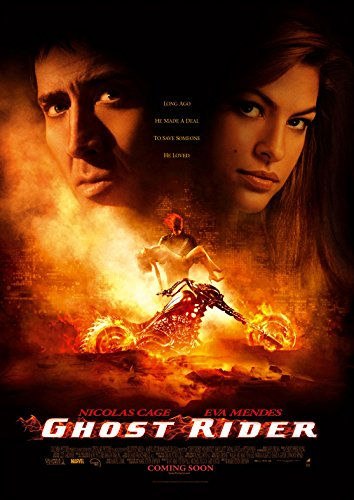
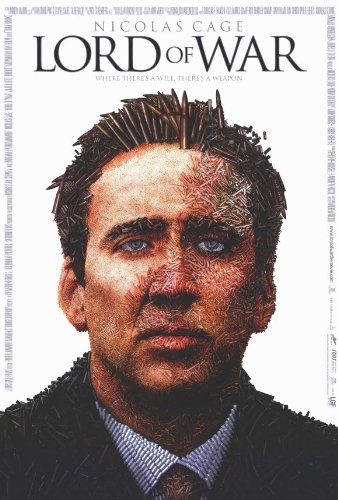
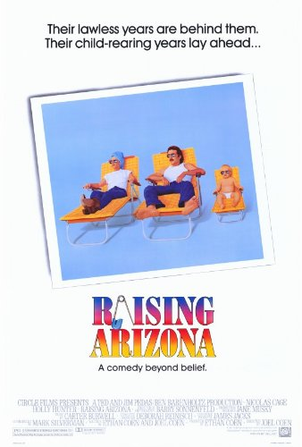

National Treasure
Benjamin Franklin Gates, a historian and amateur cryptologist searching for a lost treasure of precious metals, jewelry, artwork and other artifacts that was accumulated into a huge stockpile and eventually hidden by American Freemasons during the American Revolutionary War. A coded map on the back of the Declaration of Independence points to the location of the "national treasure," but Gates is not alone in his quest.
Whoever can steal the Declaration and decode it first will find the greatest treasure in history.
Watch the trailer here!

Ghost Rider
Stunt motorcyclist Johnny Blaze decides to give up his soul to become the Ghost Rider and fight against Blackheart, the son of Mephistopheles, the devil himself.
Watch the trailer here!

Lord of War
In the early 1980s, Yuri Orlov, the eldest son of a family of Ukrainian refugees, is visiting a Brighton Beach restaurant, where he witnesses a Russian mobster kill two would-be assassins holding Kalashnikov assault rifles. He is inspired to go into the arms trade, comparing the constant need for weapons to the similar human need for food. After completing his first sale, Yuri convinces his brother Vitaly to become his partner. They leave their family's restaurant behind and go into business together.
Watch the trailer here!

Raising Arizona
Fast-paced farce about an unlikely pair who go to extreme lengths to have a child. When an incompetent robber marries a policewoman, they discover that they are infertile. In order to appease his wife's longings for a child, the man steals one of a set of quintuplets, but mayhem ensues when the child's rich father sends a rabbit-shooting bounty hunter after the kidnapper.
Watch the trailer here!